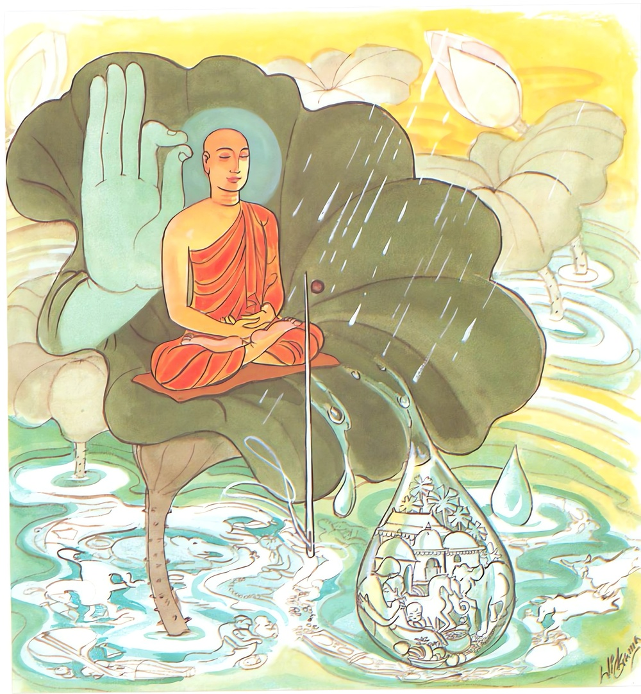

26-18 මිනිසුන් රහතුන් වහන්සේ ගැණ කළ කතාවක්
මෙම කතාව ධම්මපද අටුවාවෙන් ද කියවන්න.
වාරි පොක්ඛරපත්තෙ’ව ආරග්ගෙරිව සාසපො
යො න ලිප්පති කාමෙසු තමහං බ්රූමි බ්රාහ්මණං.
යම් පුද්ගලයෙක් තෙම පියුම්පතෙහි (නොරැඳෙන) දිය බිඳු මෙන් ද හිදි අග (පිහිටා නොසිටින) අබ ඇට මෙන් ද කාමයන්හි නො ඇලේ ද, ඒ අශෛක්ෂයා බ්රාහ්මණයෙකි යී මම් කියමි.

“මධුවා මඤ්ඤති බාලො” යන ගාථා වර්ණනායෙහි මෙහි විස්තර කථාව ආවා ය. කලකට පසු මහාජන තෙමේ “රහතුන් වහන්සේලාත් කාමසේවනය කරත් ද, කාම සේවනය නො කරත් ද, උන්වහන්සේලා වියලී ගිය වෘක්ෂයෝ නො වෙත්, තුඹස් ද නො වෙත්, තෙත් වූ සිතින් යුත් සිරුරු ඇතියහ, එහෙයින් උන්වහන්සේලාත් කම් සැප විඳින්නාහ”යි ධර්මශාලයෙහි රැස් ව කතා කරන්නට වී ය. බුදුරජානන් වහන්සේ ධර්මශාලාවට වැඩම කළ වේලෙහි මේ කතාව අසා “මහණෙනි! රහත්හු කම සැප නො විඳින්නෝ ය, කාම වස්තූන් සේවනය නො කරන්නෝ ය, පියුම්පතෙහි වැටුනු දියබිඳු එහි නො ඇලේ ද, නො රැඳේ ද, පෙරැළී ගොස් බිම වැටෙ ද, ඉදිකටු අග තුබූ අබැට එහි නො සිටී ද, එසේ රහත්හුගේ සිත්හි දෙවැදෑරුම් වූ කාමය මොන ලෙසකිනුත් නො ඇලෙන්නේ ය, නො පිහිටන්නේ ය”යි අනුසන්ධි ගළපා ධර්මදේශනා කරණ සේක් මේ ධර්මදේශනාව කළ සේක.
වාරි පොක්ඛරපත්තෙච ආරග්ගෙරිව සාසපො,
යො න ලිප්පති කාමෙසු තමහං බ්රෑමි බ්රාහ්මණන්ති.
පියුම්පතෙහි දිය මෙන් ද ඉදිකටු අග අබැටක් මෙන් ද යමෙක් කාමයන්හි නො ඇලේ ද ඔහු, මම බමුණු යි කියමි.
වාරි පොක්ඛරපත්තෙ ඉව ආරග්ගෙ ඉව සාසපො = පියුම් පතැ දිය මෙන් ඉදිකටු අග අබැටක් මෙන්.
යො න ලිප්පති කාමෙසු = යමෙක් කාමවස්තූන්හි නො ඇලේ ද.
තං අහං බ්රෑමි බ්රාහ්මණං = ඔහු මම බමුණු යි කියමි.
‘වාරි’ නම්: ජලය යි, ජලය ‘වාරි’ යි කියනු ලබනුයෙ පවස වළකා ලන බැවිනුත් වළතැන්, ගොඩතැන් නො සලකා එකසේ හැමතැන ගලා යන බැවිනුත් ය. “වාරයති නින්නොන්නමිති = වාරි, වාරයති පිපාසමිති වා” යනු නිරුක්ති.
‘පොක්ඛරපත්ත’ නම්: මෙහි නෙළුම් කොළ ය යි. ‘පොක්ඛර’ ශබ්දය, නෙළුම් ගස, නෙළුම් මල, නෙළුම් කොළ ය, නෙළුම් කැකුළ, වීණද්රොණිමුඛ ය, වාද්යභාණ්ඩමුඛ ය, ශරීර ය යනාදී අරුත් ද දෙන්නේ ය. ජලයෙන් වැඩෙන බැවින් ජලයෙහි හට ගන්නා බැවින් නෙළුම් ගස ‘පොක්ඛර’ යි කියනු ලැබේ. ‘පොක්ඛර’ යනු හා එක් වූ ‘පත්ත’ ශබ්දයෙන් නෙළුම් කොළය කිය වේ.
‘ආරග්ග’ නම්: ඉදිකටු අග යි. ‘ආර’ යනු ආකර, ආකාර, ශස්ත්ර, කෙත, නියර, ඇළ, වේග, ජන්ම යනාදී අරුත් හි ද එන්නේ ය. මෙහි ලොහයෙන් කළ ඉදිකටු ව කියනු ලැබේ. ඒ හා එක් වූ ‘අග්ග’ ශබ්දය, ආදි, භාග, කොටි, අභිමුඛ, උත්තම යනාදී අරුත් හි ද වැටේ. මෙහි නැගී සිටියේ කොටි යන අරුත්හි ය. කොටි නම්: මෙහි කෙළවර ය. ‘සාසප’ නම්: අබ ය, වා සෙම් ආදී දෝෂයන් නසා ශරීරයෙහි ක්රියාත්මක වන බැවින් සාසප නම් වී ය.
යො න ලිප්පති කාමෙසු = යමෙක් කාම වස්තූන්හි නො ඇලේ නම්.
තං අහ’ බ්රෑමි බ්රාහ්මණං = ඔහු මම බමුණු යි කියමි.
යමෙක් පියමු පතෙහි දිය මෙන් ඉදිකටු අග අබැටක් මෙන් වස්තුකාමක්ලේශකාමයන්හි නො ඇලේ ද හේ බ්රාහ්මණ නම් වන්නේ ය.
ධර්මදේශනාවගේ අවසානයෙහි බොහෝ දෙන සෝවන්ඵලාදියට පැමිණියාහු ය.
උත්පලවර්ණ ස්ථවිරා වස්තුව නිමි.